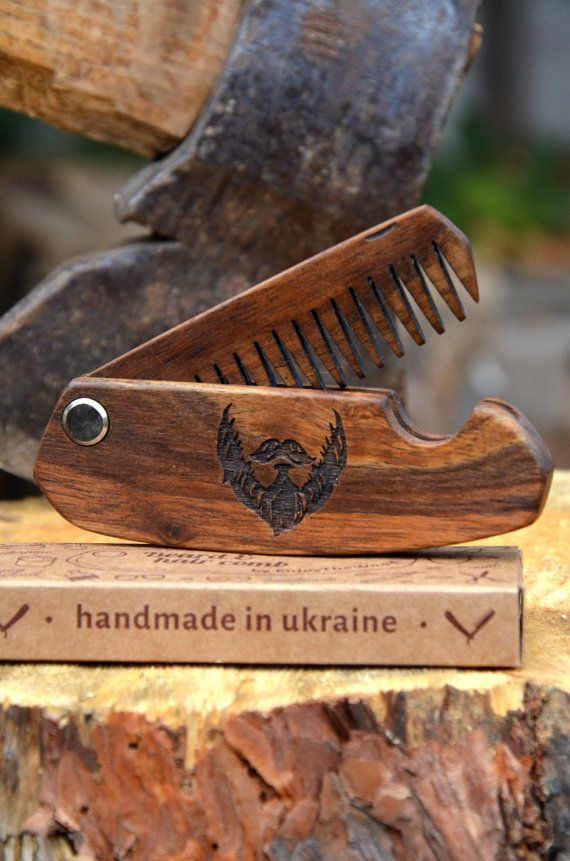

Nossos Produtos
Nossos Produtos
Seguindo as receitas secretas criadas por Geralt de Rívia e supervisionadas uma a uma pela nossa equipe de quimicos composta por Walter White e Alfie Solomons , todos os nossos produtos são criados para atender às expectativas dos amantes do Clube da Cultura da Navalha ! Então aproveite sem medo esse verdadeiro arsenal ao seu dispor ! ..
-
Para o Seu Cabelo
Beleza , você foi deu um trato no cabelo , ficou parecendo um legítimo Shelby mas .. e agora ? Como fazer para manter o estilo depois de sair da Barbearia ? Aqui te apresentaremos nossos produtos para essa missão !
-
Para a sua Barba
Do Viking ao Old School , do Lenhador ao Cocoto do Rolê , a barba pra nós vai além da moda , é uma cultura .. Sparta ! Auuuuhhh!
-
Para a sua Pele
Qualquer amante da cultura da barba que se preze , tem que cuidar da pele também , afinal vc não quer ficar parecendo um Chokito pra cremosa ou pro cremoso né , rss ?
-
Seus Acessórios de Guerra
Pare o que está fazendo agora e imagine a cena ... Você avisando a patroa ( ou o patrão ) que vai levar o herdeiro pra dar uma volta , algumas horas depois , voltam os dois literalmente um a cara do outro ! É Spartano , estamos aqui pra te informar que isso é possível..